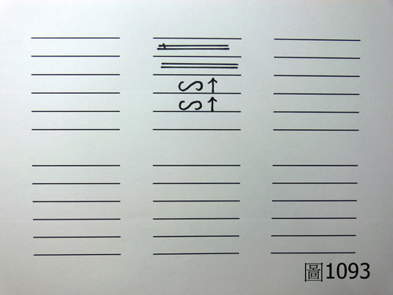
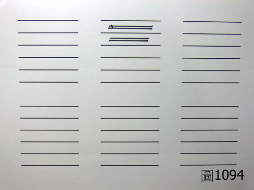
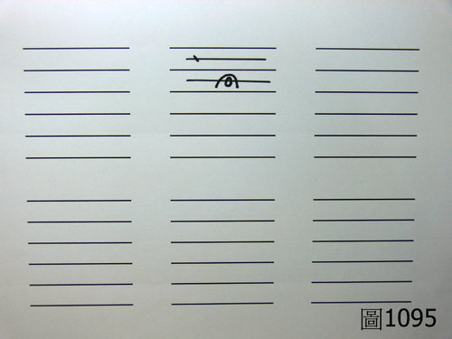

中醫用藥問答錄 39：藿香正氣散的問題
作者：陳建元
或問：在遇到右關浮細軟或浮弦的外感又沒有藿香可用，是否可用防風取代嗎？或者藿香正氣散較好呢？
答：
浮弦或是浮細軟都是風寒為主，用紫蘇或防風替代都可以〈若是繃得愈緊則代表風寒愈重，則選用紫蘇較佳；若是愈軟則是風濕愈重（水濕重時則脈象發軟，如水浸物會發軟一般），則選用藿香或防風較佳〉。
用藿香正氣散則不妥，藿香正氣散裡面有一堆燥濕藥：
藿香 12克 紫蘇 5克 白芷 5克 大腹皮 5克 茯苓 5克 白朮 9克 半夏 9克 陳皮 9克
厚朴 9克 桔梗 9克 甘草 5克 生薑 10克 大棗 4枚
解表藥（12＋5＋5）：燥濕理氣藥（5＋5＋9＋9＋9＋9＋9）約 2：5。
也就是說藿香正氣散的整個配置是→→燥濕理氣藥重而解表藥輕。
若脈象是脾脈第1～2層浮弦狀態且第3～4層緩脈的才合適，如〈圖1093〉

若脈象只是脾脈第1～2層浮弦而已如〈圖1094〉，其病機是「脾脈（系）外感風寒」，則整個藿香正氣散套下去的時候，在比例上，譬如在7公克的藥物之中，只有2公克是解表藥，只有這個部分是正確的對應上病機，其餘的5公克則是拉拉隊（把整個藥效往下拉的隊伍，也即所謂的拉拉隊）、拖屎連（台語。專門扯後退的害群之馬的意思）、占著毛坑不拉屎（占去大部分的藥物份量，一包藥粉乍看很大包，但大部分都是摻些與病機無關的味素藥或是扯後腿的藥物），因為明明沒有濕邪明顯而又去猛利濕，則勢必表邪尚未除盡，就開始化燥生變，脈圖會轉成〈圖1095〉的樣子，這樣子是一個問題尚未解決掉，又製造出另一個問題出來。


所以說此處的病機只是「脾脈風寒」而已，那要用藿香正氣散的話則要加減，把後面的10味藥都減去，只保留前面的3味藥則合拍（此方出自於局方，而大部分的人看到這個方子是在《醫方集解》中看到的，按照原編著者汪昂的解說，使用方劑必須要按照脈象來加減，可參考基礎概論 48這邊的第18項、第19項 和第23項，又可參考基礎概論 46這邊的第9項），而一定要這樣做的話，不如說先辨明脾脈（系）確實有外感風寒，然後自己選藿香、紫蘇、防風……之類的藥物一兩味下去用，不是更單刀直入，更快更直接嗎？何必拿幾個方子在那邊繞圈子做複雜的數學運算呢？
由這邊也可以知道，如果是要當職業醫師的話，必需要全面的學習脈理、醫理、病理等相關學識，使自己有分析病機的能力，病機一分析出來，本草書中隨意選幾味藥用起來都很神奇，根本不存在方不方的問題，所以才說天下無方；而民間所謂的揀方套症的用藥方式，只是一種方便的應急方式，用在試不行的話再去找醫師的應急方式而已，職業醫師千萬不要誤以為這樣就是歷代醫家的用藥模式，否則必然會遇到走不出來的困境。
【引用請先來信告知徵求同意，若有涉及販售營利等商業行為，版權所有拷貝盜用必究。】
【藥王脈學講壇】http://blog.xuite.net/drjychen/twblog